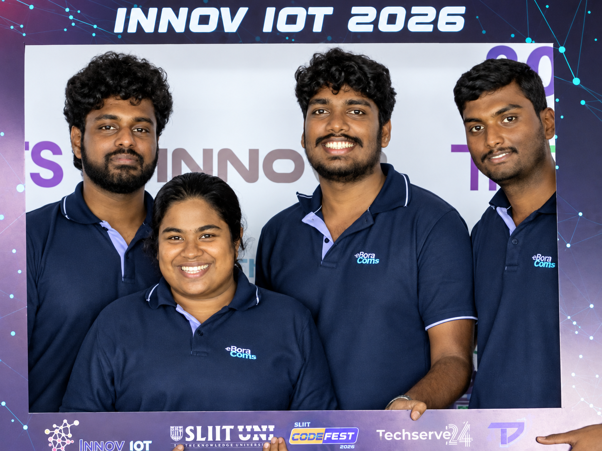

Objective feedback for practical CPR education
ResQ is an offline-first engineering platform that adds sensing, live coaching, and completed-session review to manikin-based CPR training.

A multidisciplinary student project
The four-member team worked across embedded firmware, sensor integration, mechanical prototyping, backend services, desktop software, responsive dashboards, testing, and technical communication.
Meet the team and mentorsA retrofit path from manikin to measurable practice
The platform is intended to improve training access without replacing the institution’s complete CPR education workflow.

Instrumented training hardware
The physical prototype combines a chest overlay, pressure and displacement sensing, controller electronics, and local connectivity. ESP32-C3 firmware turns sensor behavior into calibrated CPR training metrics and device states.
- Retrofit-oriented physical design
- Guided readiness and calibration
- Compression, recoil, interruption, and pressure-balance feedback
- Local MQTT telemetry using the canonical namespace

Live coaching and session review stay local
The Windows Tauri LocalHub coordinates Mosquitto, Spring Boot, SQLite, REST/SSE communication, instructor workflows, trainee feedback, session history, scoring, and export.
Under Active Development
Optional cloud synchronization remains outside the critical live-training path.